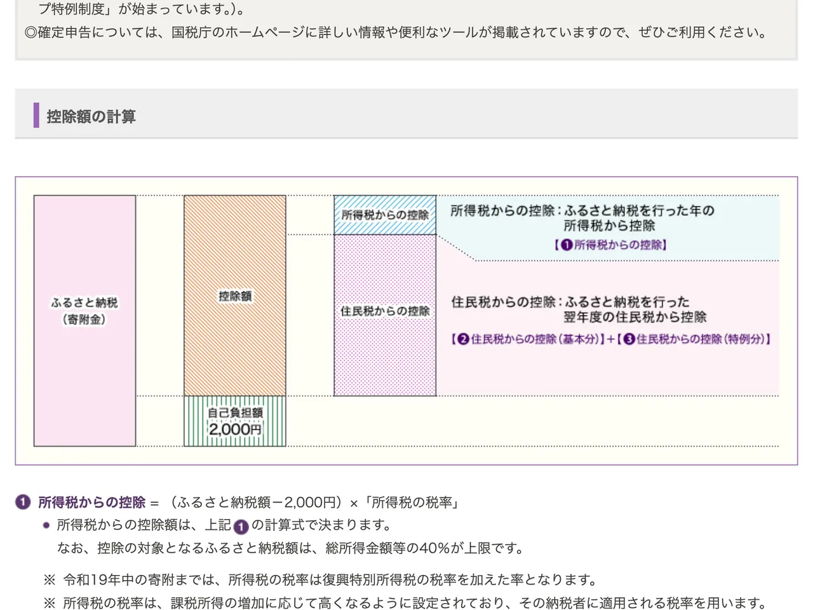
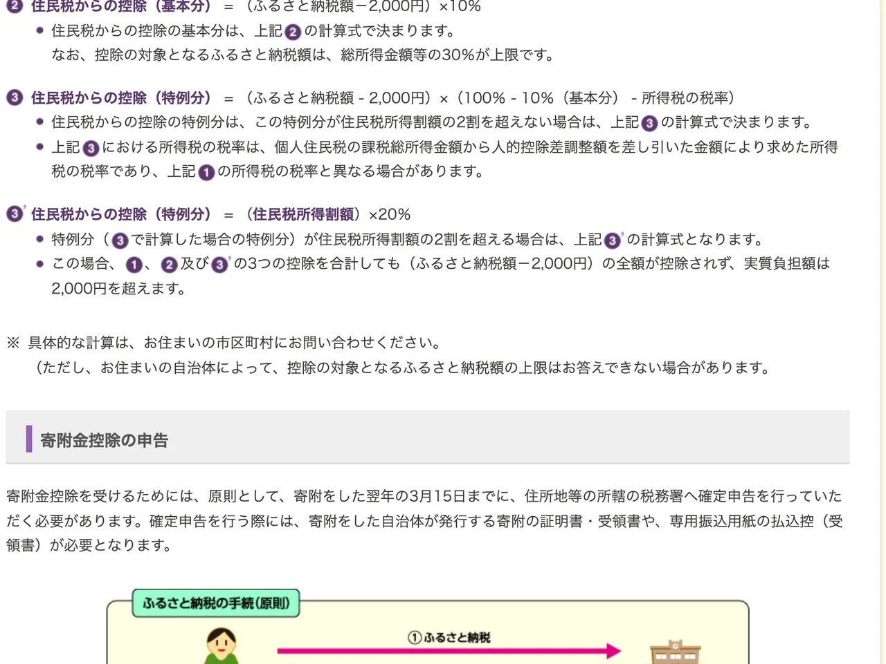

ふるさと納税の上限額（控除限度額）は、総務省の計算式では「住民税所得割額の2割（20%）」が目安です。寄附額のうち2,000円を超える部分は、原則としてこの範囲内で所得税と住民税から全額控除されます。この記事では、控除の仕組みと、自分の上限額を知るための計算方法を、総務省の公式資料にもとづいて説明します。
01ふるさと納税の控除額は3つに分かれる
ふるさと納税（都道府県・市区町村への寄附金）のうち2,000円を超える部分は、一定の上限まで、所得税と個人住民税から原則として全額が控除されます。控除は3つの計算式に分かれています。
- 所得税からの控除 ＝（ふるさと納税額－2,000円）×所得税の税率
- 住民税からの控除（基本分） ＝（ふるさと納税額－2,000円）×10%
- 住民税からの控除（特例分） ＝（ふるさと納税額－2,000円）×（100%－10%－所得税の税率）
①②で控除しきれない分を、③の住民税特例分がまとめて吸収する仕組みです。所得税からの控除は総所得金額等の40%、住民税の基本分は総所得金額等の30%が、それぞれ対象となる寄附額の上限です。

02上限額を決めているのは「住民税特例分の2割ルール」
ここが上限額のポイントです。住民税からの控除（特例分）には上限があり、住民税所得割額の2割（20%）までしか控除されません。この2割を超えてしまうと、計算式は「住民税からの控除（特例分）＝住民税所得割額×20%」に切り替わります。
この場合、3つの控除を合計しても（ふるさと納税額－2,000円）の全額は控除されず、実質の自己負担は2,000円を超えます。つまり、上限額とは「住民税特例分が、住民税所得割額の2割を超えない範囲のふるさと納税額」のことです。

結論上限額を超えて寄附をしても、ペナルティはありません。超えた分が自己負担に加わるだけです。心配な場合は、少し低めに見積もっておくと安心です。
03総務省の例で見る、実際の控除額
総務省の資料には、具体的な計算例が示されています。
例年収700万円の給与所得者（夫婦子なし、所得税の限界税率20%）が、30,000円のふるさと納税をした場合。所得税からの控除5,600円（(30,000円－2,000円)×20%）、住民税の基本分2,800円（(30,000円－2,000円)×10%）、住民税の特例分19,600円（(30,000円－2,000円)×(100%－10%－20%)）を合計すると28,000円。ふるさと納税額30,000円との差額、自己負担は2,000円です。
このケースでは、住民税特例分19,600円が、所得割額の2割の範囲内に収まっているため、全額が控除されています。
| 項目 | 金額 |
|---|---|
| ふるさと納税額 | 30,000円 |
| ①所得税からの控除 | 5,600円 |
| ②住民税からの控除（基本分） | 2,800円 |
| ③住民税からの控除（特例分） | 19,600円 |
| 控除額の合計 | 28,000円 |
| 自己負担額 | 2,000円 |
04自分の上限額を調べる方法
所得税の税率は年収によって0〜45%の間で変わり、住民税所得割額も人によって違うため、上限額は一人ひとり異なります。総務省の計算式に自分の数字を当てはめるのが正確ですが、手元の書類だけでは所得税率や所得割額が分かりにくいという人も多いはずです。
総務省のページにも「具体的な計算は、お住まいの市区町村にお問い合わせください」とあり、自治体によっては回答できない場合もあると明記されています。実務的には、次の2つの方法が使われています。
- 住んでいる市区町村から送られる住民税決定通知書に記載の「所得割額」をもとに、自分で計算式に当てはめる。
- ふるさと納税サイトが提供する上限額シミュレーターに、源泉徴収票などの金額を入力する。
いずれの方法でも、令和19年中の寄附までは、所得税の税率に復興特別所得税の税率が加わることに注意してください。これも上限額に影響する要素です。
05ワンストップ特例と確定申告での違い
上限額の計算そのものは、ワンストップ特例でも確定申告でも同じです。ただし、控除される税金の内訳が変わります。
注意ワンストップ特例の申請を行った場合、所得税からの控除は行われず、その分も含めた控除額の全額が、翌年度の住民税から控除されます。確定申告の場合は、所得税分がその年の所得税から還付され、住民税分は翌年度の住民税から減額されます。合計の控除額は同じです。
ワンストップ特例を使えるのは、確定申告が不要な給与所得者等で、寄附先の自治体数が5団体以内の場合に限られます。6団体以上に寄附した場合や、もともと確定申告を行う場合は、確定申告で控除を受ける必要があります。
06よくある質問
ふるさと納税の上限額はどうやって計算しますか？
総務省の計算式では、所得税からの控除＋住民税の基本分（10%）＋住民税の特例分で決まります。住民税の特例分には上限があり、住民税所得割額の2割（20%）を超えると、それ以上は控除されません。この範囲に収まる寄附額が、実質的な上限額の目安です。
上限額を超えて寄附をするとどうなりますか？
ペナルティはありません。超えた部分について控除が受けられず、自己負担額が2,000円より多くなるだけです。
住民税所得割額はどこで確認できますか？
住んでいる市区町村から送られる住民税決定通知書に記載されています。総務省のページでも、具体的な計算については市区町村への問い合わせを案内しています。
ワンストップ特例でも上限額は変わりませんか？
変わりません。控除される税金の内訳（所得税か住民税か）が変わるだけで、控除額の合計や上限額の考え方は確定申告の場合と同じです。
07まとめ
- ふるさと納税の上限額は、住民税からの控除（特例分）が住民税所得割額の2割（20%）を超えない範囲が目安です。
- 控除は、①所得税からの控除、②住民税の基本分（10%）、③住民税の特例分の3つに分かれます。
- 上限を超えても罰則はなく、超えた分だけ自己負担が増えます。
- 自分の正確な上限額は、住民税決定通知書の所得割額をもとに計算するか、ふるさと納税サイトのシミュレーターで確認してください。
控除額や上限の具体的な計算は、お住まいの市区町村によって回答できる範囲が異なります。正確な金額を知りたい場合は、公式の計算式にもとづくシミュレーターを使うか、お住まいの市区町村に確認してください。